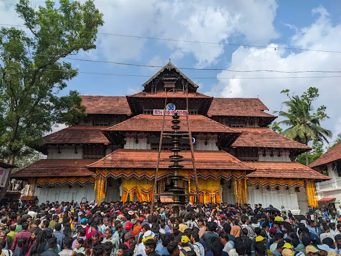

Founded according to legend by Sage Parashurama, it is considered the first Shiva temple created by him in kerala .
The temple is a premier example of traditional Kerala architecture and hosts the famous Thrissur Pooram festival.
shaped by its role as a global spice trading hub. Centered on a syncretic blending of religious traditions, its heritage includes ancient Ayurvedic practices,
classical arts like Kathakali, and a robust social reform movement. The state's development was deeply influenced by early dynasties like the Cheras and later European contact.

Kerala, a state on India's tropical Malabar Coast, has nearly 600km of Arabian Sea shoreline.
It's known for its palm-lined beaches and backwaters, a network of canals. Inland are the Western Ghats,
mountains whose slopes support tea, coffee and spice plantations as well as wildlife.
National parks like Eravikulam and Periyar, plus Wayanad and other sanctuaries,
are home to elephants, langur monkeys and tigers.